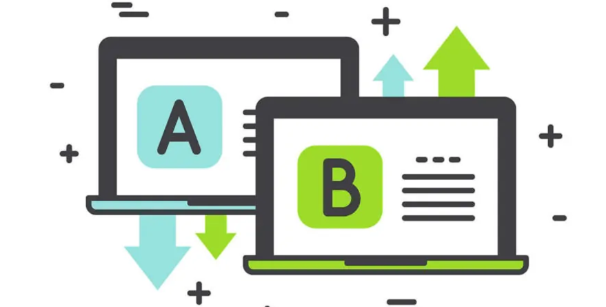

January 3, 2023
My fascination with data analytics sprouted from a genuine curiosity to uncover meaningful insights from raw information. Early in my journey, I stumbled upon the captivating realm of Exploratory Data Analysis (EDA), a process that felt akin to solving a complex puzzle. The power to transform seemingly disparate data into cohesive narratives intrigued me.
Visualization tools emerged as the artistic brushstrokes in this analytical canvas. Witnessing the transformation of dry statistics into vibrant, interactive visuals was akin to bringing data to life. Tools like Tableau and Power BI became my partners in storytelling, enabling me to convey intricate patterns and trends in a language that transcends the boundaries of mere numbers.
This symbiotic dance between data exploration and visualization became the driving force behind my passion for data analytics, propelling me deeper into the art and science of uncovering narratives within the vast landscape of information..
Through my website, I invite you to embark on a journey through my projects, each a unique narrative stitched together by the threads of Python libraries. It's not just about the code; it's about the stories we unravel and the insights we illuminate in the fascinating world of data analytics. Join me in exploring the dynamic interplay between data and code, where every project is a chapter in the story of my analytical journey.
Uber, a pivotal conduit for urban travel, caters to a diverse array of individuals. Whether it's the carless urban dweller or the intentionally non-driving urbanite with a hectic schedule, Uber's services have seamlessly woven into the fabric of city living. In this project, join me on a captivating journey as we unravel the intricacies of Uber trips through the lens of Python analysis.

Ever wondered how businesses figure out the best way to turn website visitors into customers? That's where A/B Testing steps in—it's like comparing two secret recipes to see which one makes the most people buy something or do what you want them to do.
In this project, I'll show you the ropes of A/B Testing using Python. It's like being a detective, but instead of solving crimes, you're figuring out the best tricks to make websites work better. Let's dive in and unravel the mystery behind A/B Testing!.

Delving into the world of App Reviews Sentiment Analysis is like deciphering the feelings hidden in user reviews of mobile apps. It's about using smart data analysis tricks to figure out whether people are saying good things, bad things, or something in between about their app experiences.
If you're curious about how to decode the sentiments behind app reviews, you're in the right place. This project is your guide to mastering the art of App Reviews Sentiment Analysis using Python. Let's explore the emotions tucked within those digital words with the LinkedIn app!
In the fast-paced world of e-commerce, ensuring accurate courier charges for B2B shipments is a real headache. B2B businesses often face discrepancies in estimated charges, causing operational hiccups. In this project, I'll guide you through a streamlined solution using Python for precise B2B Courier Charges Analysis. Let's decode the numbers and optimize logistics efficiency.
Ever wondered exactly how your precious screen time gets divided up among various applications and websites on your device? Screen Time Analysis swoops in as the digital detective, offering a comprehensive breakdown of your interaction with different apps and sites. The beauty? It's not just numbers; it's a visual spectacle showcasing your digital habits.
If you're keen on demystifying your screen time and crafting a visual narrative, you're in for a treat. This project is your ticket to mastering the art of Screen Time Analysis using Python, focusing specifically on the data from WhatsApp and Instagram. Let's dive into the world of Python-powered insights and decode your digital journey!
Get ready for a data dance! 📊✨ Exciting analytics projects are on the way. Stay tuned, and let's turn numbers into insights together! 🚀 #DataMagicComingSoon